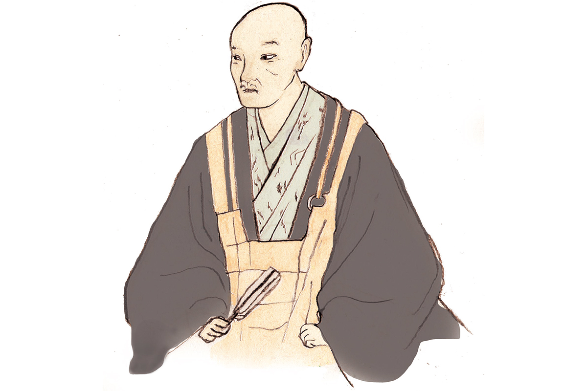
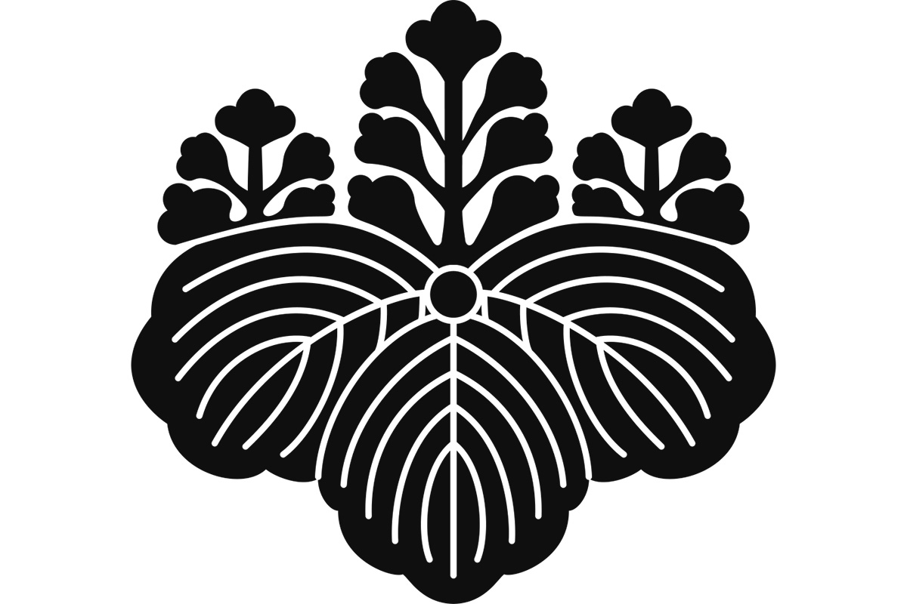
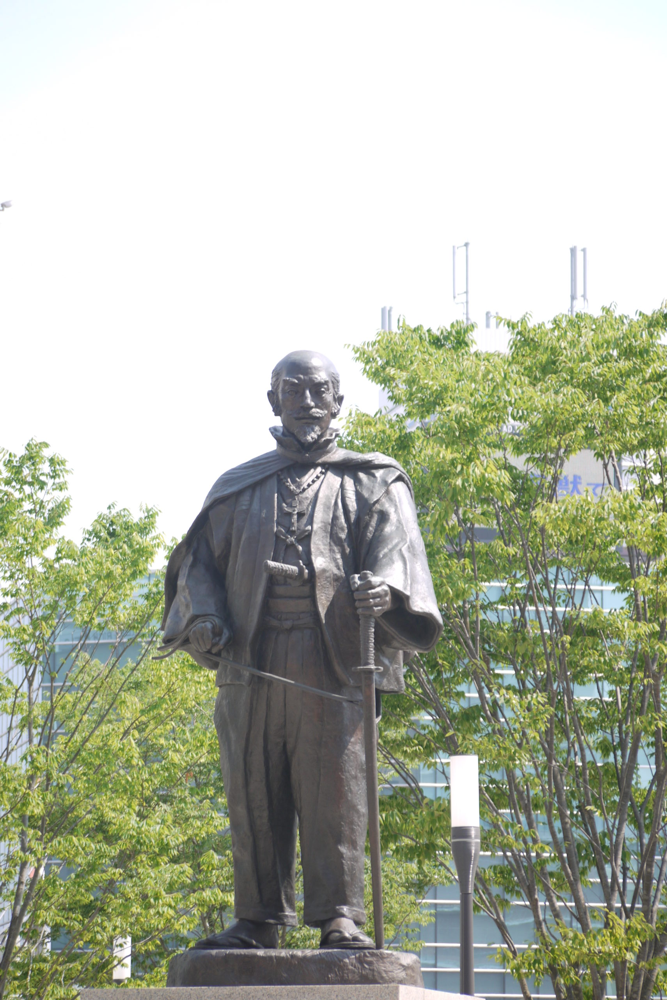

Префектура Оита · город Оита, Усуки · личность
Сорин Отомо: даймё, который крестился и мечтал о христианском Кюсю

В конце XV века власть сёгунов Муромати рухнула, и по всей Японии поднялись удельные князья, даймё. Среди них Сорин Отомо выделялся тем, что смотрел далеко за море: он принял христианство, торговал с европейцами и всерьёз думал построить на Кюсю христианскую страну.
Человек
Дзэн, крест и чайная церемония
Эпоха Сэнгоку, «воюющих провинций», длилась с конца XV до конца XVI века и до сих пор остаётся для японцев временем легендарных полководцев. Сорин Отомо из их числа, и в истории он известен прежде всего как самый яркий из христианских даймё. Правил он провинцией Бунго на востоке Кюсю, там, где сейчас префектура Оита.
Сначала Сорин был последователем дзэн-буддизма. Всё изменила встреча с миссионером Франциском Ксаверием, который приехал в Бунго. С тех пор князь охотно перенимал «намбан», культуру южных варваров, как японцы называли португальцев и испанцев. В своих владениях он открыл больницу, где лечили по-европейски, и её считают первой в Японии больницей общего профиля. Сорин развивал и заморскую торговлю: говорят, в экономике он разбирался хорошо.

Слава у него неоднозначная. Считается, что как ревностный христианин он велел разрушать буддийские храмы и синтоистские святилища. Ещё рассказывают, что он слишком любил вино и застолья и не мог пройти мимо красивой женщины. Образ тирана держится прочно, но у Сорина была и другая сторона: он знал толк в живописи, каллиграфии и чайной церемонии, а расписывать стены и раздвижные перегородки приглашал Эйтоку Кано, одного из главных художников эпохи. Многое в его портрете добавили позднейшие пересказы, и историки до сих пор спорят, каким он был на самом деле.
«Отбрасываю собственные слабые суждения и подчиняюсь мудрости Деуса»
Сорин Отомо
В этих словах весь Сорин-христианин. Учением он был увлечён настолько, что одно время всерьёз собирался создать на Кюсю христианское государство.
Хроника
От хозяина Кюсю до осаждённого замка
Сорин родился в Бунго в 1530 году. В 1550-м спор о наследстве в доме Отомо закончился мятежом, известным как «мятеж на втором этаже». После него главой рода, уже 21-м по счёту, стал Сорин.
Дальше были годы подъёма. В 1557 году Сорин подчинил север Кюсю, а в 1559-м получил пост военного губернатора соседней провинции Будзэн. Под его властью оказалась самая большая территория на острове, и не только на бумаге.
Потом удача начала изменять. В 1569 году он двинул войска против Таканобу Рюдзодзи из провинции Хидзэн, но отступил, когда с другой стороны вторгся Мотонари Мори. В 1570-м в битве при Имаяме Рюдзодзи разбил его армию, в бою погиб младший брат Сорина. В 1578 году войска Отомо потерпели тяжёлое поражение от рода Симадзу в битве при реке Мимикава.
В 1584 году по приказу Сорина полководец Досэцу Татибана вернул большую часть провинции Тикуго. Но в 1586-м при реке Хэцуги был разгромлен передовой отряд Хидэёси Тоётоми, пришедший на помощь Отомо. Сорин заперся в замке Усуки и удержал его, однако Ёсихиса Симадзу поставил род на грань гибели. В 1587 году Сорин присоединился к походу Хидэёси на Кюсю и в том же году умер от болезни в Бунго.
Где увидеть
Следы Сорина в префектуре Оита
Памятник у станции Оита

Первое, что видит приезжий в городе Оита, административном центре префектуры, это бронзовый Сорин на привокзальной площади. По данным мэрии, памятник работы скульптора Наоки Томинаги поставили в ноябре 1982 года, к 400-летию японского посольства в Европу.
Памятник Сорину Отомо
- Адрес
- префектура Оита, город Оита, Суэхиро-мати, 1-1-28
- Как добраться
- площадь перед станцией JR Оита
Сад резиденции Отомо и «Намбан Бунго Корюкан»
Резиденция рода Отомо стояла в старом центре города Оита, и её руины сегодня охраняются государством как исторический памятник. Пруд усадьбы нашли при раскопках в 1998 году. По сведениям мэрии, это самый большой прудовый сад, известный в резиденциях даймё эпохи Сэнгоку: 67 метров с востока на запад и 30 метров с севера на юг, с островом посередине и водопадами. Восстановленный сад открыли для посетителей 5 июня 2020 года.
Рядом работает бесплатный центр «Намбан Бунго Корюкан». В слове «Бунго» на его вывеске латинская V стоит вместо U, как на старых европейских картах. Внутри видео о жизни Сорина, макет чайной комнаты эпохи Сэнгоку с утварью из раскопок и уголок, где можно примерить одежду, похожую на одеяние князя. С деревянной террасы открывается вид на сад.
Сад резиденции Отомо и «Намбан Бунго Корюкан»
- Адрес
- префектура Оита, город Оита, Кэнтоку-мати, 3-2-45
- Телефон
- +81 97-578-9191
- Часы работы
- 9:00–17:00, вход до 16:30
- Выходные
- понедельник (кроме первого понедельника месяца и праздников), следующий день после праздника, с 28 декабря по 4 января
- Цены / Вход
- бесплатно
Руины замка Усуки
Замок, в котором Сорин выдержал осаду 1586 года, стоял в приморском городе Усуки. По данным туристической ассоциации Усуки, Сорин построил его в 1556 году на острове Ню в бухте, и море защищало крепость надёжнее, чем прежняя ставка рода в Фунаи, на месте нынешнего центра Оиты. Миссионеры-иезуиты описывали его как «остров, похожий на замок».
Руины замка Усуки
- Адрес
- префектура Оита, Усуки, Усуки, 72-1
- Телефон
- +81 972-63-1111
- Как добраться
- 5–15 минут пешком от станции JR Усуки
- Сайт
- usuki-kanko.com
Фото: Мария Араи.